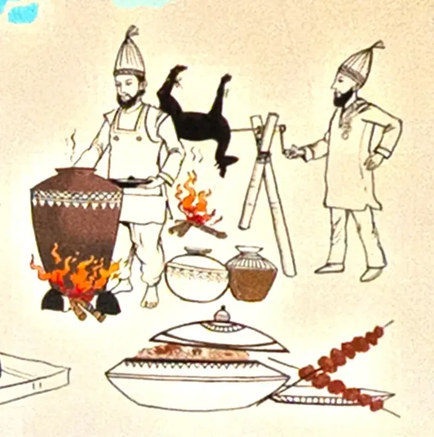

The menu
The Punjabi kitchen
The Golden Temple, the dhol, and a basket of naan. 46 dishes · all veg.
Punjabi Main Course
28 dishes- Veg.Veg Patiyala₹389
A lip-smacking curry made with a tomato-based gravy, shredded paneer, julienne-cut mixed vegetables, cream and ghee, stuffed in a papad roll.
- Veg.Veg Tiranga₹399
A vegetarian dish of mixed vegetables with three different shahi / rich gravies of spicy, medium and mild/sweet flavours.
- Veg.Paneer Sultani₹369
Stuffed fried paneer blended with a rich and flavourful cashew nut, tomato and onion gravy.
- Veg.Paneer Birbali₹369
Paneer Birbali is a rich, Mughlai-inspired Indian dish featuring paneer in a creamy, flavorful gravy.
- Veg.Paneer Rajwadi₹369
Cooked in a creamy tomato-based sauce with butter and spices.
- Veg.Paneer Toofani₹329
A popular, spicy North Indian Punjabi dish featuring paneer in a rich, flavorful gravy.
- Veg.Malai Kofta₹349
Potato, paneer, tutti-frutti and khoya kofta served with a flavorful, creamy and delicious sweet curry.
- Veg.Kaju Curry₹349
A restaurant-style creamy kaju butter masala with a rich, tangy, sweet and flavorful gravy made with cashews, tomatoes, cream and spices. Also served with a sweet white gravy on request.
- Veg.Kaju Masala₹349
Ghee roasted cashews are cooked along with onion, tomatoes and a whole bunch of whole and ground spices to make this flavorful curry.
- Veg.Paneer Lazeez₹349
Finger paneer cooked with julienne bell pepper, onion, traditional indian spices and finished with cheese tomato gravy.
- Veg.Paneer Chingari₹369
Rich and creamy curry made with paneer, spices, onions, tomatoes, cashews and butter. Medium spicy.
- Veg.Veg Sultani₹349
Sardesai's Kitchen special preparation.
- Veg.Paneer Pasanda₹369
Made with stuffed paneer slices which are batter coated, fried and served in a smooth onion, tomato cashew gravy.
- Veg.Veg Angara₹349
Mixed vegetables blended with tomato, onion and white gravy. Spicy and flavourful, served on a hot pan.
- Veg.Babycorn Mushroom Masala₹329
Baby corn and mushroom masala is a rich, creamy dish in cashew nut paste.
- Veg.Paneer Lababdar₹349
Paneer Lababdar is a delicious North Indian dish made with paneer (Indian cottage cheese) cooked in a rich and creamy tomato-based gravy.
- Veg.Paneer Khurchan₹369
Delicious Paneer (cottage cheese) dish blended with the flavour of Nigella seeds, cream and butter.
- Veg.Veg Deewani Handi₹285
It is a medley of assorted vegetables cooked in a rich and creamy spinach based gravy, flavored with aromatic spices like cumin, coriander, and garam masala.
- Veg.Paneer Musallam₹279
Paneer Musallam prepared in creamy, mildly tangy gravy of tomato, onion and spices. A delectable dish with soft paneer chunks cooked in a rich tomato gravy.
- Veg.Paneer Tikka Masala₹279
Paneer Tikka Masala is a popular Indian curry where cubes of paneer (Indian cottage cheese), onions and peppers are marinated with yogurt and spices, grilled and then tossed in a creamy tomato based curry.
- Veg.Paneer Butter Masala₹299
Mild sweetness and tanginess from tomatoes and onions; richness of butter, cashew nuts and cream combined with the subtle aromas from dry spices.
- Veg.Hari Makai Khas₹279
Sardesai's Kitchen special: a rich, creamy spinach-based gravy with American corn, served with different seasonings.
- Veg.Subz Begum Bahar₹349
Sardesai's Kitchen special preparation.
- Veg.Veg Chilli Milli₹299
A flavorful, North Indian-style mixed vegetable curry with a rich and creamy tomato and cashew-based gravy.
- Veg.Veg Kofta Curry₹299
An exotic Indian gravy dish in two parts, kofta and curry. The koftas are balls of minced veggies and spices, fried and then added to a tangy, creamy and spicy onion-tomato curry.
- Veg.Palak Paneer₹269
A classic curried dish from North Indian cuisine made with fresh spinach, onions, spices, paneer and herbs.
- Veg.Mix Veg Kolhapuri₹249
A delicious spicy mixed vegetables dish which has its origin in Kolhapur, must try.
- Veg.Aloo Mutter₹249
Dal
5 dishes- Veg.Dal Tadka₹171
- Veg.Dal Fry₹161
- Veg.Palak Dal₹161
- Veg.Butter Lasuni Dal₹179
- Veg.Dal Kolhapuri₹189
Indian Breads
13 dishes- Veg.Tandoor Roti Plain/Butter₹20 / ₹25
- Veg.Naan Plain/Butter₹40 / ₹55
- Veg.Garlic Naan Plain/Butter/Cheese₹75 / ₹79 / ₹99
- Veg.Kulcha Plain/Butter/Stuffed₹55 / ₹59 / ₹119
- Veg.Lachha Paratha₹45
- Veg.Khasta Roti₹40
- Veg.Biscuit Roti Plain/Cheese₹45 / ₹59
- Veg.Kashmiri Naan₹95
- Veg.Missi Roti₹35
- Veg.Chapati Plain/Butter₹20 / ₹25
- Veg.Tawa Paratha Plain/Butter₹25
- Veg.Jawari Roti₹30
- Veg.Roti Basket₹499

Tandoor & BBQ
Coal under the tandoor, and kebabs straight off the skewer. 34 dishes · 14 veg.
Tandoori Starters
14 dishes- Non-veg.Assorted Non Veg Platter₹1399
Speciality of the house.
- Non-veg.Tandoor Chicken Full/Half₹649 / ₹399
Tandoori chicken is a dish made from chicken marinated in yogurt and spices and roasted in a tandoor.
- Non-veg.Murgh Lapeta Kebab₹529
Tender chicken pieces are marinated in yogurt and spices, then cooked with a rich and aromatic spices of onion, tomato, cashew nuts, coconut and green chilies.
- Non-veg.Makrana Tangri Kebab₹489
A chicken Tangdi infused with flavors and spices and cooked so well that the meat came right off the bone.
- Non-veg.Murgh Afghani Kebab₹499
Goodness of cream mixed with rich cashews, poppy seeds and melon seeds along with pepper infused in chicken and grilled to perfection.
- Non-veg.Murgh Alishan Kebab₹429
Boneless chicken stuffed with minced roasted chicken and green peas, marinated in yogurt, ginger, garlic medium spiced paste and barbecued.
- Non-veg.Murgh Seekh Kebab₹389
Seekh Kebabs are made of ground meat that is seasoned with aromatic spices and ginger, garlic, green chilies, onions, cilantro.
- Non-veg.Murgh Pahadi Kebab₹369
Pahadi kabab is a spicy green colored chicken kabab made using boneless chicken marinating in a yoghurt based marination with herbs and spices.
- Non-veg.Afghani Tangri Kebab₹449
Afghani Tangdi Kabab is a wonderful royal preparation of chicken whole legs marinated in rich ingredients, spices and nut paste.
- Non-veg.Murgh Reshmi Kebab₹369
Chicken Reshmi Kabab is made with Pieces of Boneless Chicken Breast, marinated in juicy mixture of Curd, Cream, Cashew nuts and Spices and then Grilled in Oven.
- Non-veg.Murgh Peshawari₹369
Murgh peshawari is a dish of chicken that originated in Peshawar and is known for its flavorful blend of spices and tender chicken.
- Non-veg.Murgh Malai Tikka₹369
Murgh Malai Tikkas are bite size pieces of chicken cooked in a creamy marinade with yoghurt, cheese, ginger, garlic and cheese.
- Non-veg.Murgh Banjara Kebab₹369
Chicken grilled in a marinade of ginger, garlic, green chilli and cheese.
- Non-veg.Murgh Tikka₹329
A popular Indian appetizer consisting of small, boneless pieces of chicken marinated in a blend of Indian spices and yogurt, then typically grilled or roasted.
Kebabs
14 dishes- Veg.Assorted Tandoor Platter₹999
Speciality of the house.
- Veg.Paneer Suneri Kebab₹469
Speciality of the house.
- Veg.Paneer Sufiyani₹399
Speciality of the house.
- Veg.Paneer Dilkhush₹469
Speciality of the house.
- Veg.Stuffed Mushroom Cheese₹399
Speciality of the house.
- Veg.Veg Burashi Seekh Kebab₹349
Marinated With Carrot, Cauliflower, Beetroot & Spinach, Mint & Indian Spices.
- Veg.Veg Seekh Kebab₹329
Veg Seekh Kabab is a delicious snack cum starter made using mixed vegetables like carrot, beans, cabbage, peas, capsicum, potatoes and spices.
- Veg.Paneer Peshawari Kebab₹329
Cottage cheese marinated with ginger garlic paste and brown onion paste and yogurt then grilled in charcoal oven.
- Veg.Paneer Malai Tikka₹319
Cottage cheese marinated with roasted cashew nut paste, fresh cream, cheese and yogurt then grilled in charcoal oven.
- Veg.Paneer Pahadi Kebab₹289
Cottage cheese marinated with fresh spinach, coriander, mint, green chilly, ginger garlic paste and yogurt with house special herbs and spices, then grilled in charcoal oven served with grated cheese and butter.
- Veg.Paneer Banjara Kebab₹289
Cottage cheese marinated in blend of herbs, spices and yogurt, and then grilled until tender and slightly charred. Served with grated cheese and butter with smoky taste.
- Veg.Tandoori Mushroom/Babycorn/Aloo₹279
- Veg.Paneer Achari Tikka₹289
Cottage cheese marinated with fresh pickle and house special spices, then grilled in charcoal oven served with special garnishing.
- Veg.Paneer Tikka₹279
Chef Special — Chicken Kebab
5 dishes- Non-veg.Murgh Jungali Kebab₹899
- Non-veg.Murgh Dhamaka Kebab₹799
- Non-veg.Murgh Madira Kebab₹799
- Non-veg.Murgh Dum Ka Kebab₹499
- Non-veg.Murgh Sholay Kebab₹399
Chef Special — Mutton Kebab
1 dishes- Non-veg.Mutton Seekh Kebab₹499
Mutton nawabi seekh is a type of kebab made with spiced minced mutton and typically cooked on a skewer.
The Mughlai kitchen
Lucknow’s gateway, a nawab at ease, and slow dum handis. 30 dishes · 12 veg.
Shorba
3 dishes- Veg.Tomato Shorba₹190
Tomato Dhaniya Shorba is a light, spiced Indian-style tomato and coriander broth.
- Veg.Palak Shorba₹190
Palak soup is a wonderfully flavorful, comforting, and healthy dish, made with simple, wholesome ingredients.
- Veg.Dal Shorba₹190
Dal shorba is simply lentil soup made from yellow moong dal or toor dal.
Chicken Main Course
12 dishes- Non-veg.Chicken Handi Full/Half₹1299 / ₹799
Chicken handi is an Indian dish made with chicken, a creamy tomato-based gravy, and aromatic spices.
- Non-veg.Murgh Musallam Full/Half₹1374 / ₹749
It consists of whole chicken marinated in a ginger-garlic paste, stuffed with boiled eggs and seasoned with spices like saffron, cinnamon, cloves, poppy seeds, cardamom and chilli.
- Non-veg.Chicken Patiala₹549
Chicken Patiala is a popular, creamy, and nutty Punjabi dish of chicken in a gravy, often topped with an egg omelette.
- Non-veg.Chicken Banjara Masala₹489
Roasted peanuts, yoghurt, amchur powder, chilli powder, fresh coriander, vinegar, and mustard oil.
- Non-veg.Chicken Mughlai₹489
Chicken mughlai is made with chicken that's marinated in yogurt and spices, and then cooked in a creamy gravy.
- Non-veg.Chicken Chettinad₹449
It consists of chicken marinated in yogurt, turmeric and a paste of red chillies, kalpasi, coconut, poppy seeds, coriander seeds, cumin seeds, fennel seeds, black pepper, ground nuts, onions, garlic and sesame oil.
- Non-veg.Butter Chicken₹389
Chicken with a spiced tomato and butter (makhan) sauce.
- Non-veg.Chicken Bhuna Masala₹419
Chicken bhuna originates from the Bengal region of India. The dish typically consists of a base of onions, garlic, ginger and spices being fried together to form a thick coating sauce.
- Non-veg.Chicken Laziz₹449
Chicken lazeez is a dish of boneless or pre-cooked chicken in a rich, medium-spiced gravy.
- Non-veg.Chicken Rara₹449
Chicken pieces are cooked in a spicy and scrumptious chicken mince gravy.
- Non-veg.Chicken Tikka Masala₹379
Chicken tikka masala is a dish consisting of roasted marinated chicken chunks in a spiced sauce. The sauce is usually creamy and orange-coloured.
- Non-veg.Chicken Curry/Masala₹389
Chicken, Onion Tomato Gravy.
Mutton Main Course
6 dishes- Non-veg.Mutton Rogan Josh₹489
Mutton Rogan Josh is an aromatic, slow-cooked meat curry from Kashmiri cuisine, known for its tender meat and rich, deep-red gravy.
- Non-veg.Mutton Rara₹499
Rich North Indian curry that uniquely combines bone-in mutton pieces with mutton mince in a thick, flavorful, and heavily spiced gravy.
- Non-veg.Mutton Kadhai₹469
Mutton Kadai is a spicy, aromatic Mughlai dish of tender mutton with tomatoes, onions, garlic, and a rich blend of spices.
- Non-veg.Mutton Korma₹469
Tender pieces of mutton simmered in a rich, fragrant, and creamy sauce made from yogurt, nuts, and a blend of aromatic spices.
- Non-veg.Mutton Curry/Masala₹469
- Non-veg.Mutton Hyderabadi₹469
Rice & Biryani
9 dishes- Veg.Steamed Rice Full/Half₹121 / ₹69
- Veg.Jeera Rice Full/Half₹141 / ₹79
- Veg.Lemon Rice₹151
- Veg.Curd Rice Tadka₹161
- Veg.Ghee Dum Rice₹191
- Veg.Veg Pulao₹221
- Veg.Veg Dum Biryani₹249
- Veg.Hyderabadi Veg Dum Biryani₹249
- Veg.Dal Khichadi₹239
The Maharashtrian kitchen
Kolhapuri heat and Saoji spice from next door. 19 dishes · 7 veg.
Maharashtrian Main Course
19 dishes- Veg.Baigan Saoji₹279
- Veg.Veg Saoji₹299
- Veg.Shev Bhaji₹219
- Veg.Tawa Besan/Methi₹219
- Veg.Lasuni Methi/Masala₹219
- Veg.Veg Maratha₹219
- Veg.Bhendi Fry/Masala₹219
- Non-veg.Chicken Malvani Full/Half₹1299 / ₹799
Chicken is cooked in a rich and thick coconut gravy along with a spicy malvani masala resulting in a stimulating chicken curry made in authentic Malvani style.
- Non-veg.Chicken Kolhapuri Full/Half₹1299 / ₹799
Chicken Kolhapuri is a popular spicy, rich, delicious and super flavorsome dish of curried chicken from the Kolhapuri cuisine. Chicken is marinated in fresh ground spices.
- Non-veg.Chicken Saoji Full/Half₹1299 / ₹799
The main ingredient in this chicken curry is the saoji masala. This masala is so flavourful as it is made with many fragrant and warm spices like poppy seeds, dried coconut, black pepper, coriander seeds, bay leaves, green and black cardamom, cinnamon, cloves and many more aromatic spices.
- Non-veg.Chicken Maratha Full/Half₹1299 / ₹799
Chicken Maratha is a spicy and flavorful chicken dish that's a popular part of Marathi cuisine.
- Non-veg.Chicken Kharda₹329
Prepared with authentic Indian spices. Kharda is prepared with garlic, flame-roasted green chillies.
- Non-veg.Chicken Sukha₹329
A semi-dry Konkani chicken curry made with chicken, freshly ground sukka masala, and coconut.
- Non-veg.Mutton Malvani Full/Half₹1649 / ₹899
Mutton is cooked in a rich and thick coconut gravy along with a spicy malvani masala resulting in a stimulating mutton curry made in authentic Malvani style.
- Non-veg.Mutton Saoji Full/Half₹1649 / ₹899
The main ingredient in this mutton curry is the saoji masala. This masala is so flavourful as it is made with many fragrant and warm spices like poppy seeds, dried coconut, black pepper, coriander seeds, bay leaves, green and black cardamom, cinnamon, cloves and many more aromatic spices.
- Non-veg.Mutton Kolhapuri Full/Half₹1649 / ₹899
Mutton Kolhapuri is a popular spicy, rich, delicious and super flavorsome dish of curried mutton from the Kolhapuri cuisine. Mutton is marinated in fresh ground spices.
- Non-veg.Mutton Maratha Full/Half₹1649 / ₹899
Mutton Maratha is a spicy and flavorful mutton dish that's a popular part of Marathi cuisine.
- Non-veg.Mutton Kharda₹399
Prepared with authentic Indian spices. Kharda is prepared with garlic, flame-roasted green chillies.
- Non-veg.Mutton Sukha₹399
A semi-dry Konkani mutton curry made with mutton, freshly ground sukka masala, and coconut.
Coastal & Seafood
Church bells, backwater boats and the day’s catch. 7 dishes · seafood.
Seafood — Starters
4 dishes- Non-veg.Fish (Amritsari/Ajwaini/Achari/Lasuni)₹649
- Non-veg.Pomfret (Tawa/Tandoori/Rava)As per size
- Non-veg.Prawns (Koliwada/Rava/Tawa/Tandoori)As per size
- Non-veg.Surmai (Tawa/Rava)As per size
Seafood — Main Course
3 dishes- Non-veg.Prawns Curry (Goan/Kerala/Mangalorean)As per size
- Non-veg.Surmai Curry (Goan/Kerala/Mangalorean)As per size
- Non-veg.Pomfret Curry (Goan/Kerala/Mangalorean)As per size
The Continental kitchen
Grills, salads, sizzlers, pizza and pasta. 38 dishes · 22 veg.
Salads
9 dishes- Veg.Greek Farmhouse Salad₹249
Kalamata olives and feta cheese provide the must-have salty and briny contrast to crisp romaine lettuce, cucumbers, sweet tomatoes, and spicy red onions.
- Veg.Waldorf Salad₹249
A fruit and nut salad made of celery, fresh apples, walnuts, and grapes, dressed in mayonnaise, and traditionally served on a bed of lettuce.
- Veg.Russian Salad₹249
A creamy, addictive salad with lots of veggies and mayonnaise. Simple, fresh, and the ideal summer salad.
- Veg.Sprout Salad₹199
Assorted sprouts with chat masala, salt and special spices.
- Veg.Fresh Garden Salad₹149
Cucumber, tomatoes, carrot, beetroot, cabbage and green chilly.
- Non-veg.Grilled Chicken Salad₹299
Grilled Chicken Salad – Boneless Chicken, Babycorn, Onion, Iceberg Lettuce, cherry tomato with Lemon Vinaigrette Dressing.
- Non-veg.Asian Mix Chicken Salad₹299
Asian Mix Chicken Salad – Iceberg, Red Cabbage, Carrot, Diced Chicken with Sweet Chilly Dressing.
- Non-veg.Caesar’s Chicken Salad₹299
Caesar’s Chicken Salad – Iceberg, Croutons, Parmesan Cheese, Chicken with Caesar Dressing.
- Non-veg.Italian Chicken Salad₹299
Italian Chicken Salad – Cabbage, Bell Peppers, Carrots, Chicken, Grapes and Pineapple with Mayonnaise Dressing.
Sandwiches
5 dishes- Veg.Cheese Club Sandwich₹269
- Veg.Cheese Grilled Sandwich₹239
- Veg.Cheese Chilly Toast₹269
- Veg.Veg Club Sandwich₹249
- Veg.Veg Sandwich₹179
Continental — Starters
4 dishes- Non-veg.Garlic Chicken Cheese Ball₹399
- Non-veg.Italian Spices Fried Chicken₹399
- Non-veg.Crispy Fried Chicken₹399
- Non-veg.Barbecue Chicken Wing₹399
Pizza
3 dishes- Veg.Margherita Pizza₹359
Typical Neapolitan pizza, roundish in shape with a raised edge and garnished with hand-crushed peeled tomatoes, mozzarella, fresh basil leaves.
- Veg.Tandoori Paneer Tikka Pizza₹359
Homemade Pizza crust layered with a Special sauce, paneer, bell pepper, onions, and cheese, this Paneer Pizza is a must-have for pizza night.
- Veg.Exotica Veg Pizza₹359
Mushroom, capsicum, black olives and stretchy mozzarella, seasoned with garlic and oregano.
Pizza & Pasta
11 dishes- Veg.Nachos₹379
- Veg.Cheese Garlic Bread₹299
- Veg.Cheese Mozzarella Stick₹429
- Veg.Cheese Corn Ball₹329
- Veg.Arrabiata Pasta₹369
- Veg.Alfredo Pasta₹369
- Non-veg.Rusticana Chicken₹369
- Non-veg.BBQ Chicken₹369
- Non-veg.Peri Peri Chicken₹369
- Non-veg.Carbonara Chicken Pasta₹399
- Non-veg.Chicken Pesto Pasta₹399
Hot Pan & Sizzlers
6 dishes- Veg.Exotic Vegetable Sizzler₹469
Broccoli, yellow corn, peas and carrots on a bed of Fried Rice on cabbage base.
- Veg.Vegetable Indian Sizzler₹459
Pan fried paneer cubes along with roasted vegetables and a spicy sauce that is rich in the garlic- tomato flavour.
- Veg.Vegetable Chinese Sizzler₹449
Savory, spicy Chinese sizzlers with rich sauces and vibrant veggies.
- Non-veg.Prawns Sizzler₹899
Prawns cooked with garlic, chili, and a citrus or soy sauce base, served on a sizzling hot plate.
- Non-veg.Grilled Chicken Sizzler₹459
A savory dish served on a sizzling platter with grilled chicken and vegetables.
- Non-veg.Garlic Pepper Chicken Sizzler₹449
Pan-fried chicken marinated with garlic, black pepper, and other spices, served with sautéed vegetables.
Chinese & Oriental
Wok-tossed starters, noodles, rice bowls and Thai curries. 43 dishes · 26 veg.
Chinese & Oriental — Starters
25 dishes- Veg.Mongolian Cottage Cheese₹475
Cottage cheese tossed in Mongolian sauce.
- Veg.Paneer Cheese Cigar₹359
Chatpata minced paneer and cheese with salt, pepper, mustard, Worcestershire sauce, ginger and garlic, in a deep-fried cigar-sized roll.
- Veg.Crispy Corn Salt & Pepper₹359
American corn, crispy fried and tossed in sea salt, black pepper and garlic.
- Veg.Paneer Chilly Dry₹289
It is simply flour or batter coated fried paneer cubes tossed in a spicy, salty, tangy and sweet sauce made with green bell peppers, garlic, ginger, green chillies, soy sauce and more seasonings.
- Veg.Paneer 65₹289
Paneer coated in spices, ginger, garlic and lemon juice, tossed with curry leaves, curd and spices.
- Veg.Mushroom Chilly/Manchurian Dry₹279
- Veg.Veg Spring Roll₹279
- Veg.Honey Chilly Potato₹289
- Veg.Corn Crunchy₹299
- Veg.Veg Manchurian Dry₹219
- Veg.Gobi Manchurian Dry₹219
- Veg.Veg Crispy₹219
- Veg.Veg 65/Gobi 65₹219
- Veg.Peri Peri Fries₹189
- Veg.French Fries₹169
- Non-veg.Crispy Honey Chilli Chicken₹190
Made with fried chicken strips tossed with delicious spicy-sweet, honey chilli sauce.
- Non-veg.Mongolian Chicken₹190
A dish of crispy chicken coated in a sweet, savory, and aromatic sauce. The chicken is often made with boneless, sliced chicken breast or thighs, & the sauce typically includes soy sauce, brown sugar, & scallions.
- Non-veg.Chicken Spring Rolls₹190
Vermicelli noodles, ground chicken, carrots, a few sprigs of cilantro, a few basil leaves, and a sprinkling of fried garlic.
- Non-veg.Hunan ChickenPrice on request
Hunan chicken is a spicy, savory, and tangy Chinese-American stir-fry dish featuring tender, thinly sliced chicken and a mix of vibrant vegetables tossed in a bold sauce.
- Non-veg.Chicken Manchurian/ChillyPrice on request
- Non-veg.Chicken Pepper/LemonPrice on request
- Non-veg.Chicken GarlicPrice on request
- Non-veg.Chicken 65/KantakiPrice on request
- Non-veg.Chicken LollipopPrice on request
- Non-veg.Chicken Salt & PepperPrice on request
Chinese & Oriental — Main Course
18 dishes- Veg.Thai Green Curry With Steamed Basil Rice₹429
A dish made with a base of curry paste, coconut milk, and a combination of protein, vegetables, and fresh herbs.
- Veg.Thai Red Curry With Steamed Basil Rice₹429
Thai red vegetable curry is a creamy, aromatic dish featuring a medley of fresh vegetables simmered in a rich coconut sauce.
- Veg.Paneer / Manchurian Chilly Rice Bowl₹379
Indo-Chinese fusion dish that features crispy, sauced paneer served alongside flavorful stir-fried rice in a single bowl.
- Veg.Veg Manchurian Rice Bowl₹351
A popular Indo-Chinese meal consisting of a colorful combination of vegetable fried rice and crispy mixed-vegetable dumplings.
- Veg.Mushroom Manchurian Gravy₹249
Sliced mushrooms are dipped in a thick batter & deep fried until crisp and golden.
- Veg.Veg Schezwan Triple Noodles₹289
A popular Indo-Chinese dish that is a complete, hearty meal built around stir-fried noodles.
- Veg.Veg Schezwan Noodles₹249
Stir-fried noodles tossed with a colorful assortment of crisp vegetables and a fiery Schezwan sauce.
- Veg.Burnt Garlic Noodles₹239
A popular Indo-Chinese dish featuring noodles stir-fried with garlic that has been caramelized to a dark, smoky-sweet flavor.
- Veg.Veg Hakka Noodles₹229
- Veg.Veg Fried Rice₹249
A popular dish made by stir-frying cooked rice with various vegetables, sauces like soy sauce and vinegar, and aromatics.
- Veg.Veg Schezwan Fried Rice₹259
Cooked rice stir-fried with mixed vegetables and a spicy Schezwan sauce.
- Non-veg.Chicken Thai Curry (Red/Green)₹499
A popular Southeast Asian dish of bite-sized chicken pieces and fresh vegetables simmered in a creamy, rich coconut milk sauce flavoured with aromatic Thai curry paste.
- Non-veg.Chicken Triple Schezwan Fried Rice₹329
A mixture of spicy Schezwan fried rice and noodles, a spicy chicken Schezwan gravy, and crispy fried noodles for garnish, often topped with an omelette.
- Non-veg.Chicken Chilli Garlic Noodles₹279
Chicken noodle stir fry with a garlic and chilli sauce.
- Non-veg.Chicken Schezwan Fried Rice₹269
Boneless strips of chicken and rice are tossed in a hot and spicy schezwan sauce and vegetables.
- Non-veg.Chicken Hakka Noodles₹264
Boiled noodles with marinated chicken, plenty of fresh, crunchy vegetables, and a savory sauce.
- Non-veg.Chicken Burnt Garlic Fried Rice₹279
A simple stir fried rice tossed with chicken and Asian sauces with a predominant flavour of garlic.
- Non-veg.Chicken Fried Rice₹239
A simple stir fried rice tossed with chicken and Asian sauces with a predominant flavour of garlic.
Drinks, soups and desserts
Juices, mocktails, soups, salads and something sweet. 76 dishes · 55 veg.
Beverages
8 dishes- Veg.Orange Juice₹129
- Veg.Pineapple Juice₹129
- Veg.Watermelon Juice₹129
- Veg.Fresh Lime Soda Sweet/Salted₹69
- Veg.Fresh Lime Water₹59
- Veg.Butter Milk Plain/Masala₹79 / ₹89
- Veg.Soft Drink 330ML/500MLMRP
- Veg.Packaged Drinking WaterMRP
Mocktails
11 dishes- Veg.Special Mocktail₹249
- Veg.Fruit Explosion₹199
Mix Fruit Juice, Strawberry Ice Cream, Grenadine Syrup, Coconut Syrup, Fruit Toppings.
- Veg.Guava Merry₹199
Guava & Pineapple Juice, Fresh Pineapple Chopped, Red Chilli Powder, Black Salt and Tabasco Sauce.
- Veg.Black Beauty₹199
Thums Up, Orange, Mint, Lime, Black Salt.
- Veg.Blue Coco Boomer₹199
Blue Curacao Syrup, Coconut Syrup, Pineapple Juice, Fresh Cream, Vanilla Ice Cream.
- Veg.Cucumber Ginger Mocktail₹199
Cucumber, Fresh Ginger, Sugar, Soda, Lime Juice.
- Veg.Pineapple Mint Mojito₹199
Pineapple Juice, Pineapple, Mint, Lime, Soda.
- Veg.Peach Sunrise₹199
Peach Syrup, Sugar Syrup, Soda, Lime Juice, Sprite, Grenadine Syrup.
- Veg.Cranberry Mojito₹199
Cranberry Juice, Mint Leaves, Mojito Syrup, Lime, Sugar Syrup.
- Veg.Watermelon Soda Float₹199
Watermelon, Vanilla Ice Cream, Coconut Cream, Soda.
- Veg.Pomegranate Cooler₹199
Pomegranate Juice, Pomegranate Seeds, Sugar Syrup, Lime Juice.
Soups
17 dishes- Veg.Cream Of Almond Soup₹199
A creamy, rich soup with a nutty flavour of almonds.
- Veg.Cream Of Mushroom Soup₹199
Deliciously creamy with tender bites of mushroom pieces. Full flavoured with garlic, onions and herbs subtle enough to shine through and complement the natural flavour of mushrooms without overpowering.
- Veg.Cream Of Broccoli₹199
Prepared with broccoli, vegetable stock, milk and cream.
- Veg.Veg Sweetcorn Soup₹179
Delicious soup made from fresh American sweet corn, scallions, herbs and spices.
- Veg.Lemon Coriander Soup₹169
The refreshing combination of lemon and coriander gives you a healthy soup.
- Veg.Cream Of Tomato Soup/Spinach₹159
- Veg.Veg Tom Yum Soup₹169
Various aromatic ingredients are sliced, roughly pounded, and simmered to extract their flavor. These include fresh ingredients such as lemongrass, kaffir lime leaves, galangal, chilis, shallots, and garlic.
- Veg.Veg Manchow Soup₹149
A restaurant style Chinese vegetarian soup made with mixed vegetables, garlic, ginger, soya sauce, ground pepper & a few other pantry ingredients.
- Veg.Veg Hot & Sour Soup₹149
Is a spicy and hot soup made with mixed fresh vegetables, mushrooms, spices and soy sauce.
- Non-veg.Sweetcorn Chicken₹209
Tender corn kernels and diced chicken, simmered to a soup.
- Non-veg.Cream of Chicken₹209
Boneless chicken chop, Milk, Cream, Salt, Pepper.
- Non-veg.Tom Yum Chicken₹209
Tom Yum is a world-famous Thai soup that has a full flavour that is sour, salty, spicy and slightly sweet.
- Non-veg.Tom Kha Gai Chicken₹209
A spicy soup, made with coconut milk.
- Non-veg.Chicken Lemon Coriander₹209
Tender chicken bites, crunchy cabbage, & lots of fresh coriander leaves cooked in a made-from-scratch broth.
- Non-veg.Hot & Sour Chicken₹209
Spicy and tangy soup with sesame and chilli flavour topped with chicken.
- Non-veg.Chicken Manchow Soup₹209
Spicy & hot soup with chicken and vegetables.
- Non-veg.Chicken Clear Soup₹209
A light, healthy, & comforting broth-based soup made by gently simmering chicken with vegetables & aromatics.
Papad & Raita
10 dishes- Veg.Cheese Pakoda₹269
- Veg.Paneer Pakoda₹259
- Veg.Schezwan Cheese Masala Papad₹99
- Veg.Masala Peanuts₹169
- Veg.Raita (Boondi/Pineapple/Mix Veg/Onion Mint)₹129
- Veg.Papad Churi₹99
- Veg.Butter Cheese Papad₹110
- Veg.Fried Masala Papad₹45
- Veg.Roasted Masala Papad₹40
- Veg.Papad Fried/Roasted₹40 / ₹35
Eggetarian
13 dishes- Non-veg.Egg Afghani₹291
- Non-veg.Egg Dum Biryani₹240
- Non-veg.Egg Masala₹249
- Non-veg.Egg Chilli₹229
- Non-veg.Egg Maratha/Curry₹219
- Non-veg.Cheese Omelet₹199
- Non-veg.Egg Fried Rice₹180
- Non-veg.Masala Omelet₹161
- Non-veg.Egg Bhurji₹159
- Non-veg.Plain Omelet₹129
- Non-veg.Boiled Egg Bhurji₹139
- Non-veg.Egg Half Fry₹129
- Non-veg.Boiled Egg/Fry₹60
Sweets & Desserts
17 dishes- Veg.Ras Angoori₹149
- Veg.Ras Malai₹149
- Veg.Gajar Halwa₹139
- Veg.Moongdal Halwa₹129
- Veg.Dry Fruit Kalakand₹129
- Veg.Gulab Jamun₹119
- Veg.Choco Lava₹229
- Veg.Ice Cream Single Scoop₹51
- Veg.Ice Cream Double Scoop₹99
- Veg.Triple Sundae₹199
- Veg.Dry Fruit Mastani₹249
- Veg.Butterscotch Mastani₹229
- Veg.Mango Mastani₹219
- Veg.Fresh Fruit Mastani₹239
- Veg.Bharat Special Mastani₹259
- Veg.Cold Coffee With Ice-Cream₹149
- Veg.Chocolate Brownie₹249
Nothing matches. Try another word, or switch off “Veg only”.